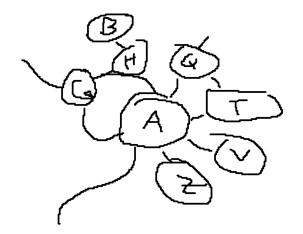
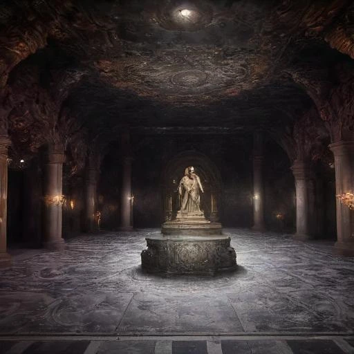
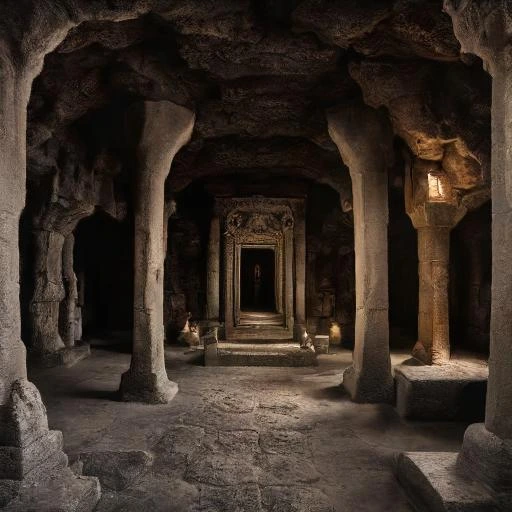
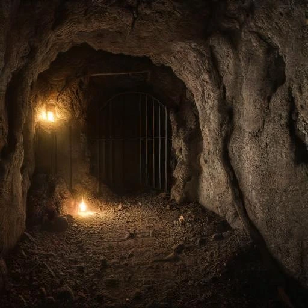

Kultstätte
Die geheime Kultstätte der Erben der neuen Welt befindet sich versteckt im Herzen von Orderly. Die Kultstätte des Kults ist in einem verborgenen Teil der Stadt untergebracht, tief unter der Erde in einem Netzwerk geheimer Tunnel und Kammern, die nur Eingeweihte kennen. Diese versteckten Bereiche sind durch unscheinbare Zugänge erreichbar, die meisterhaft in die Architektur der Stadt integriert sind, sodass sie den wachsamen Augen der Ordnungsgarde entgehen.
Allgemeine Architektur und Atmosphäre
Erscheinungsbild: Die Architektur der Kultstätte steht im krassen Gegensatz zur ordentlichen und symmetrischen Gestaltung der restlichen Stadt. Da die Stätte in einem Höhlensystem erbaut wurde, gibt es keine einheitlichen Wände. Die Wände sind mit okkulten Symbolen und Blutrunen bedeckt, die in das Gestein eingraviert sind. Fackeln werfen ein schummriges Licht, das die mystische Atmosphäre verstärkt. Gerade in eher unbenutzten Bereichen gibt es viel Schmutz und Spinnweben. Die gelegentliche Ratte überrascht einen auch nicht.
Geräuschkulisse: Ein leises, beständiges Summen von magischen Energien ist ständig zu hören, zusammen mit ständigen flüstern der Adepten und hohen Priestern. Gelegentlich hört man die Adepten in den Trainingsräumen kämpfen.
Altarraum
Ein großer Raum mit einem Altar aus schwarzem Marmor, um den die Blutrituale stattfinden. Die Decke ist mit einem Fresko der alten und des neuen Gottes bemalt, und bei Vollmond fällt das Licht direkt auf den Altar.
Gemach des Kultführers
Der Kultführer hat sein eigenes Gemach mit seinen wichtigsten Sachen. Durch die Hallen der Hohen Priestern gelangt nur er dort hinein. Sein Gemach ist direkt mit einem Fluchtweg nach draußen verbunden. Außerdem erreicht er von dort aus eine große leere Höhle, in welcher er seine Armee von Untoten ansammelt.
Hallen der Hohen Priester
Privatgemächer: Jeder Hohe Priester hat seine eigenen privaten Gemächer, die individuell eingerichtet sind. Manche haben Sammlungen an Büchern, andere Ihre Artefakte usw..
Bibliothek des Wissens: Eine umfangreiche Sammlung okkulter Bücher und Schriftrollen, die nur den Hohen Priestern zugänglich ist. Hier werden geheime Rituale und das Wissen des Kults aufbewahrt.
Quartiere der Adepten
Schlafsäle: Gemeinschaftliche Schlafräume für die Adepten, schlicht aber funktional.

Trainingsräume: Bereiche, in denen die Adepten ihre magischen Fähigkeiten und Kampfkunst trainieren können.
Geheime Gänge und Fluchtwege
Ein Netzwerk von geheimen Gängen und Tunneln, die sich unter dem Heiligtum und Orderly erstrecken und im Notfall als Fluchtwege dienen.
Auditorium

Ein großer, runder Raum für Versammlungen und Predigten, in dem der Kultführer zu den Mitgliedern spricht. Der Raum ist mit dem Symbol des Kults und Bannern geschmückt.
Trommel: Im Auditorium befindet sich eine große Trommel, welche benutzt wird, um Signale an alle Mitglieder in der Stätte zu senden. Der Trommelschlag hallt und vibriert durch die gesamte Kultstätte, ist von außerhalb aber nicht zu hören. Jeder Trommelschlag hat eine bestimmte Bedeutung.
- Langsam und rhythmisch: Dieser Trommelschlag ist der häufigste und signalisiert allen Mitgliedern des Kults, sich im Auditorium zu versammeln.
- Schnell und rhythmisch: Dieser Trommelschlag signalisiert dringende Gefahr oder den Angriff eines Eindringlings. Alle Mitglieder des Kults sollten sich sofort bewaffnen und ihre Positionen zur Verteidigung der Kultstätte einnehmen.
- Schnell und arrhythmisch: Dieser Trommelschlag signalisiert absolute Panik und Chaos. Er wurde bisher noch nie verwendet.
Verlies
Das Verlies ist ein abgelegener Raum im Höhlensystem. Es gibt nur einen Weg dorthin, und das ist durch das Auditorium. Das Verlies ist ein dunkler und schmutziger Ort, der dennoch häufig genutzt wird. Hierher kommen Verräter, Eindringlinge und Feinde, deren Bestrafung noch aussteht.
Sicherheitsmaßnahmen
Wachen: Adepten patrouillieren ständig, um das Heiligtum vor Eindringlingen zu schützen.
Gruß: Falls einer der versteckten Eingänge doch entdeckt werden sollten, kann man die Kultstätte dennoch nicht ohne weiteres betreten. Ohne den richtigen Gruß lässt sich die Kultstätte nicht betreten, da die Wachen einen aufhalten. Außerdem wird man bei einem falschen Gruß festgenommen und verhört. Der Gefangene darf daraufhin entweder dem Kult beitreten oder wird geopfert.